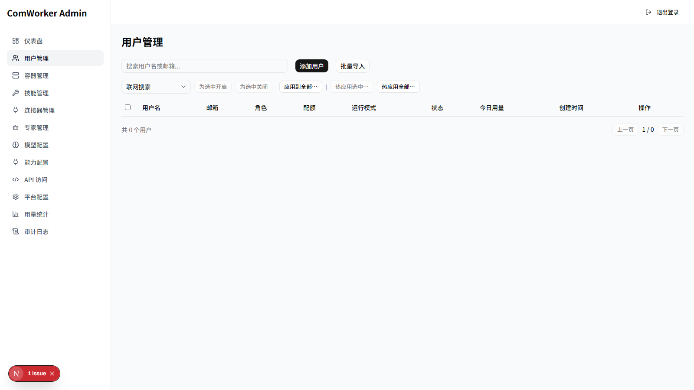
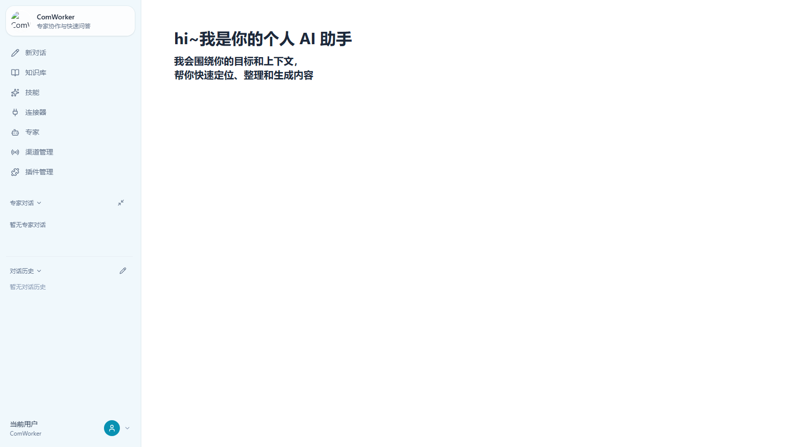
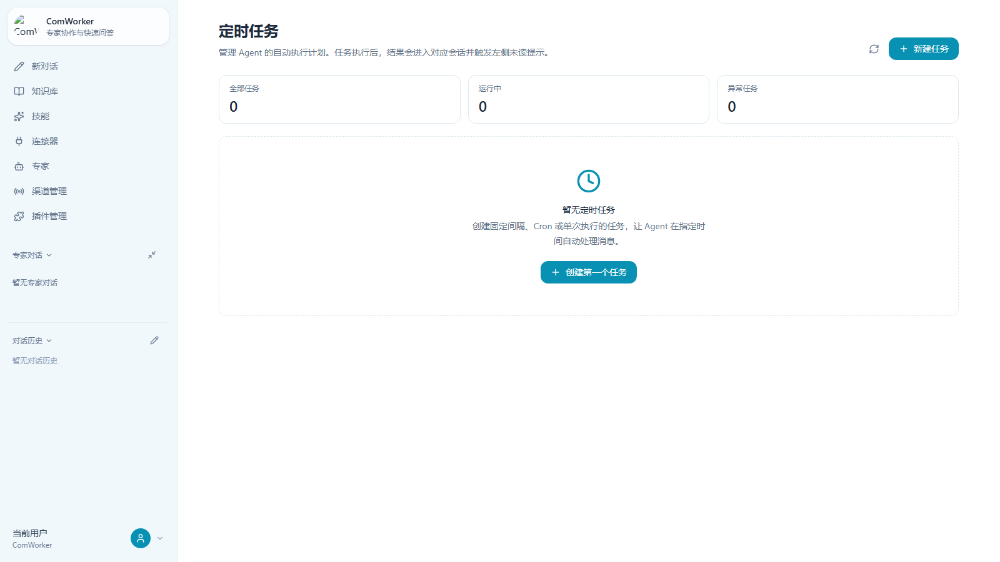

壹
账号各自注册
员工自行购买、各自配置，入转离难以同步，企业无法形成统一的账号和权限边界。
风险：权限失控 · 资产流失02 老板真正担心的，不是 AI 不够聪明
当 AI 以个人工具的方式进入企业，效率提升往往伴随着新的管理盲区。
员工自行购买、各自配置，入转离难以同步，企业无法形成统一的账号和权限边界。
风险：权限失控 · 资产流失提示词、资料和方法散落在聊天记录与个人文档中，人员一流动，经验也随之消失。
风险：重复劳动 · 经验断层模型访问、业务连接器和敏感工具缺少最小权限控制，谁调用过什么难以追溯。
风险：数据越界 · 审计缺失不同员工、模型和供应商的 Token 消耗无法汇总，预算只能靠猜，优化也没有依据。
风险：重复采购 · 成本失焦03 ComWorker 的回答
管理端定义边界，客户端释放生产力，平台在中间完成身份、能力、运行和用量路由。


04 从“能聊天”到“能干活”
不是把所有工具都开放给所有人，而是让每个岗位在授权范围内获得恰到好处的 AI 能力。
集中维护供应商、协议、密钥、默认模型与用户可见范围，避免密钥散落和配置偏差。
把制度、产品、项目和客户资料沉淀为长期知识，在对话和任务中按需召回。
把销售、研发、HR、运营等岗位方法固化成可分发的专家角色，让经验随组织复制。
连接 CRM、文档、研发平台和内部 API，以最小权限将 AI 接入现有业务流程。
按固定间隔、Cron 或单次时间自动运行任务，让日报、巡检和跟进稳定发生。
记录 Token、关键操作、容器状态和 Request-ID，为预算分析和责任追踪提供依据。
05 从等人提问，到主动执行
任务执行结果自动回到会话，员工不必守着工具，也不会错过关键节点。

06 从一个高频场景开始
统一话术，快速了解客户背景，生成沟通建议并持续跟进，让优秀经验成为团队能力。
减少新人培养成本 →辅助定位问题、梳理方案、形成文档，在提升效率的同时保留过程与结果。
减少信息断层 →让员工获得统一、准确的制度解读，把重复咨询转化为稳定的自助服务。
减少重复答疑 →周期采集状态并自动输出报告，管理者不仅看到结果，也能理解系统如何运转。
减少人工巡检 →07 安全不是附加项
ComWorker 支持私有化部署，并根据岗位风险和任务负载提供 Dedicated 与 Shared 两类运行模式。 企业可以在安全、性能和成本之间做清晰选择。
适合核心研发、数据分析、敏感岗位和长期任务。
适合通用办公、轻量问答和规模化普及。
08 从一支团队、一个场景开始
从统一账号、企业知识和一个高频任务开始试点，让成熟的 AI 能力逐步复制到更多团队。